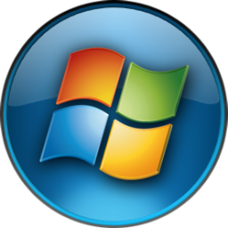

<div class="taskbar">
    

    <div class="taskbar__controllers">
        <div class="taskbar__datetime">
            <span class="taskbar__time">{{dateTimeService.currentTime()}}</span>
            <span class="taskbar__date">{{dateTimeService.currentDate()}}</span>
        </div>
        <div class="taskbar__desktop"></div>
    </div>
    
</div>
